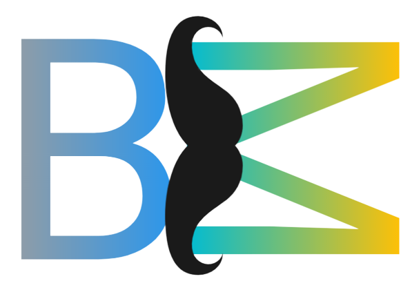

Munen Tools
Munen Tools merupakan tools ringan yang dapat digunakan sesuai kebutuhan

Munen Tools merupakan tools ringan yang dapat digunakan sesuai kebutuhan
Selamat Mencoba
Munen tools bisa diakses melalui website resmi yang telah disediakan oleh developer
Untuk memperluas jangkauan kini munen tools bisa diakses melalui bot telegram
Website Munen Tools telah diconvert menjadi apk yang bisa diakses oleh pengguna android
Untuk mengakses atau mencoba Munen Tools silahkan klik pada link dibawah ini sesuai yang kalian inginkan Website / Bot Telegram / APK